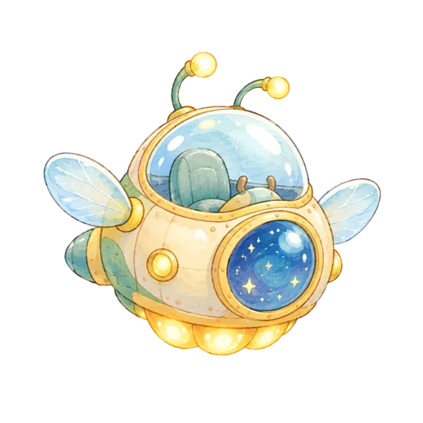
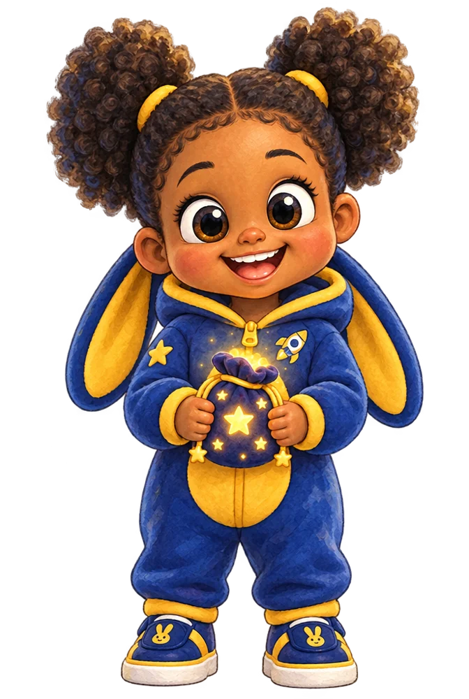

UMA SÉRIE ORIGINAL ARBORIA
a jornada de
Maria


♪
♫
♪
EPISÓDIO 1
A jornada de
Maria
continua em 2027…
assistir de novo
UMA SÉRIE ORIGINAL ARBORIA
A jornada de
Maria
▶ Assistir ao episódio
aumente o volume 🔊